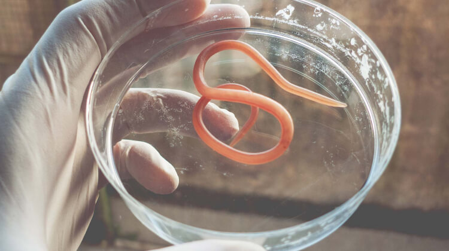

Podle Světové zdravotnické organizace se v roce frekvence nákazy parazity
zvýšila o 17,6%. Toto číslo zahrnuje nicméně nejen populaci rozvojových zemí, ale také
prosperující evropský
region.
Rozšířený výskyt helmintiózy je vysvětlen asymptomatickým průběhem
onemocnění v
raných stádiích. Infikovaná osoba nemusí po dlouhou dobu tušit přítomnost parazitů, ale
současně může
infikovat ostatní.
Proč jsou červi nebezpeční?
Existuje více než 360 známých druhů červů. Většina z nich parazituje
ve střevech
nebo játrech, ale může migrovat do jakýchkoli orgánů a systémů: plic, srdce, centrálního
nervového systému,
svalů, očních bulv a mozku.
Důsledky napadení parazity:
Rozvoj anémie, avitaminózy a anorexie;
Poškození tkání a orgánů. Zvyšuje se riziko vzniku infekce a otravy
krve;
Patologie nervového systému. Toxiny parazitů vyvolávají nespavost,
migrény, podrážděnost,
nervové poruchy, infarkty a mrtvice;
Alergické reakce (kožní vyrážka, svědění, kožní praskliny a rány);
Tvorba papilomů, které se mohou vyvinout ve zhoubné;
U dětí mohou způsobit zpoždění vývoje, vést k nebezpečným
komplikacím;
U mužů způsobují impotenci;
Plodnost u žen je snížena.
Neignorujte tento problém!

Jak dochází k napadení parazity?
Lidé jsou přesvědčeni, že se můžete nakazit pouze jídlem a neupravenou
vodou. Není
to tak. Paraziti mohou vniknout skrz kůži. Například při používání veřejné dopravy nebo
toalety.
Larvy vstupují do kapilár póry a jsou přenášeny tělem krevním oběhem.
Pro člověka
nejsou takové vpichy citlivé - je docela obtížné si infikování všimnout. Můžete se také
nakazit parazity
zvířat a hmyzu vdechováním mikroskopických vajíček spolu s prachem.
3 nejlepší metody boje proti
parazitům
Antiparazitární dieta
Kontrolujte kvalitu konzumovaných potravin: nejezte nemytou zeleninu,
ovoce a
byliny, nezpracované maso, syrové ryby (sashimi atd.) A syrové mléko.
Snižte příjem cukru a sladkostí - stimulují tvorbu patogenní
mikroflóry ve střevě.
Nezapomeňte na pravidla osobní hygieny
V moderním světě je obtížné nedotýkat se zábradlí ve veřejné dopravě,
nepoužívat
nádobí ve veřejném stravování nebo na veřejných toaletách. Stačí dodržovat základní
pravidla: pravidelně si
mýt ruce a nedotýkat se tváře.
Detoxikace
Chcete-li odstranit parazity a jejich toxiny z těla, měli byste
podstoupit
detoxikační kurz s antiparazitikem - ...
Tento nástroj je vysoce účinný, nemá žádné kontraindikace a vedlejší
účinky. Jeho
působení je zaměřeno na vytvoření nepříjemných podmínek pro parazity, při nichž ztrácejí
zájem o reprodukci,
oslabují a jsou snadno odstranitelní z těla.
Složení zahrnuje rostlinné výtažky (pelyněk, kurkuma, gotu
kola, emblémy a
celer) se silným antiparazitárním účinkem:
Způsobuje paralýzu parazitů;
Stimuluje odtok žluči, což pomáhá odstranit imobilizované parazity,
jejich larvy a
vajíčka;
Obnovuje poškozené tkáně a střevní mikroflóru, což pomáhá obnovit
imunitu a eliminuje
problém nestabilní hmotnosti;
Vytváří zdravé zásadité prostředí ve střevech, které chrání před
opětovnou infekcí.
75% užívá jako prevenci a jsou spokojeni s výsledkem
Mnoho lidí je zvyklých nevšímat si nevolnosti. Možná ani netušíte, ale
s
pravděpodobností 97–98% už paraziti žijí ve vašem těle. Larvy mohou být kdekoli - v krvi,
střevech, plicích,
prostatě, srdci nebo mozku.
Stát se nositelem škůdců je jednodušší než sníst hamburger. Stačí
si před jídlem
špatně umýt ruce, posadit se na zem, políbit infikovanou osobu, neošetřovat si
škrábance, hrát si s domácími
mazlíčky. Doporučuji absolvovat kúru , dokud vám paraziti
nenapravitelně neuškodí.
Speciálně pro naše čtenáře prodává výrobce
nástroj na parazity
za speciální cenu. Počet balení se slevou 50% je omezený.
Infekční parazitolog Praxe 17 let Spoluautor
učebnice o
infektologii
Komentáře k článku:
Viktorie
To je hrůza!!!!! Takhle můžete žít léta a netušit, že ve
vás žijí paraziti!
Bojím se tak, že si umývám ruce 30krát denně. Tuto drogu si určitě objednám.
Děkuji vám za radu!
Když už tu mluvíme o tak osobních věcech, přiznávám, že i
naše rodina měla
stejný problém. Ale znala jsem , užívala ho moje sestra.
Takže jsme to
okamžitě začali brát a rychle jsme se vzpamatovali. Naprosto souhlasím s
autorem, prevence musí být.
Vážená, pravděpodobně jste se nikdy nepotkala s
hlísticemi, že takhle
uvažujete. Řeknu vám - je velmi těžké je najít. Někteří žijí roky a nemají
podezření, že jsou
nakaženi.
zachránil také naši rodinu. Syn
přinesl štěně z
ulice, no a můj manžel a já jsme se dohodli, že si ho necháme. Ale kdo věděl, že
do našeho domu se
štěňátkem vstoupí tolik problémů. Nejprve z nějakého důvodu začaly příznaky u
manžela. Potom syn, no a
okamžitě jsem si uvědomila, že nejde o obyčejné nachlazení. Šli jsme na testy -
vše se potvrdilo -
infekce parazity. Trpěli jsme 2 týdny, snažili jsme se to vyléčit lidovými
metodami. To vše je
nesmysl! Jakmile jsme začali brát tento antiparazitní přípravek,
okamžitě jsme se
cítili lépe. Nadýmání a zvracení zmizely druhý den. Po týdnu testy ukázaly úplné
uzdravení.
Píšou správně - parazity můžete chytit ve veřejné
dopravě, v kanceláři, na
poště a v potravinách. Můj manžel například miluje tatarák, takže máme
antiparazitické nástrojy, které
bereme pořád. A teď objednám tohle.
Celé naší rodině.
Doporučuji tento nástroj všem, kteří se potýkají s
papilomy. Moje ruce byly
pokryty papilomy až po lokty. Bála jsem se, že by se to vyvinulo v něco
zhoubného. Žádná antibiotika a
léčba mi nepomohly. Zdálo se, že papilomy ubývají, ale po chvíli znovu rostly a
objevily se na nohou.
Nepřála bych ani nepříteli, aby si prošel tím, čím jsem si prošla já. Seděla
jsem doma 8 měsíců,
musela jsem opustit svou práci a stranit se i blízkých, abych je neděsila a
nenakazila je... Hrůza.
Ale díky Bohu, teď je všechno minulostí. Šťastnou shodou okolností jsem se
dozvěděla o Brala jsem to po dobu 3 týdnů a teprve poté jsem viděla
výsledek - každý den bylo
papilomů méně a méně. Zbavila jsem se papilomů, ale budu užívat tento přípravek
jako prevenci. Nechci
si zopakovat, čím jsem si prošla.
Obecně je to dobrá věc, to říkám
jako praktický
lékař. Škoda jen, že ji nedostanete všude. Prodává se pouze na jednom místě, a
jinde ne! Doporučuji to
mnoha mým pacientům, říkám jim, aby si objednali pouze od oficiálního
distributora, ale oni to
nakupují kdekoli. a pak si stěžují, že to nemá žádný účinek.
Kolik druhů parazitů ještě nebylo prostudováno, ale lidé
jimi trpí. Slyšel
jsem, že existuje 19 druhů parazitů, které mohou člověka dokonce zabít. Musíme
je zabít různými léky a
antibiotiky.
Našli jsme kočku na ulici. Vykoupali jsme ji, nedovolili
jsme mu spát na
posteli ani na pohovce. Ale zapomněli jsme zkontrolovat parazity. V důsledku
toho jsem se od něj
nakazil. Byl jsem z těchto parazitů unavený, pak se m objevila nějaká vyrážka na
kůži, pak mi bylo
špatně. Antibiotika nejsou pomoc. Nyní si objednám tohle a uvidím.
Antibiotika nepomohou zbavit se parazitů nebo hlístů, ale
tohle je přípravek
se širokým spektrem účinků. V tomto případě potřebujete něco, co lokálně zasáhne
v zóně působení
parazitů a potlačí jejich životně důležitou aktivitu. A na to je právě
Antiparazitické léky prostě zabíjejí tyto zvířátka a ty přirozeně opouštějí
tělo.
Děkuji, už jsem to o antibiotikách pochopila.
Lékař také řekl, že
antibiotika nemají žádný účinek na parazity, pouze je zabita rostlinná
flóra a naopak pomáhají
parazitům se tam množit.
Dobré odpoledne všem čtenářům. Jsem velmi ráda, že jsem
našel potvrzení svých
spekulací na internetu. Můj manžel si také začal stěžovat na neustálý průjem a
bolesti hlavy. Nejprve
jsem si myslel, že je to otrava, ale nepomohly žádné tablety proti intoxikaci.
Příznaky přetrvávaly.
Všiml jsem si, že v té době můj manžel v posteli méně vydržel. O hodně. A pak
jsem narazila na tento
článek. Okamžitě jsem mu objednal toto antiparazitikum
a čtvrtý den manžel řekl, že je po všem. Takže doporučujeme.


Komentáře k článku:
Viktorie
To je hrůza!!!!! Takhle můžete žít léta a netušit, že ve vás žijí paraziti! Bojím se tak, že si umývám ruce 30krát denně. Tuto drogu si určitě objednám. Děkuji vám za radu!
OdpovědětKarina
Když už tu mluvíme o tak osobních věcech, přiznávám, že i naše rodina měla stejný problém. Ale znala jsem , užívala ho moje sestra. Takže jsme to okamžitě začali brát a rychle jsme se vzpamatovali. Naprosto souhlasím s autorem, prevence musí být.
OdpovědětSvětlana
Stačí si jen mýt ruce!
OdpovědětValerie
Vážená, pravděpodobně jste se nikdy nepotkala s hlísticemi, že takhle uvažujete. Řeknu vám - je velmi těžké je najít. Někteří žijí roky a nemají podezření, že jsou nakaženi.
OdpovědětNina
Jak to čtu, pozoruji na sobě všechny příznaky. Objednám si to jako prevenci.
OdpovědětKateřina
zachránil také naši rodinu. Syn přinesl štěně z ulice, no a můj manžel a já jsme se dohodli, že si ho necháme. Ale kdo věděl, že do našeho domu se štěňátkem vstoupí tolik problémů. Nejprve z nějakého důvodu začaly příznaky u manžela. Potom syn, no a okamžitě jsem si uvědomila, že nejde o obyčejné nachlazení. Šli jsme na testy - vše se potvrdilo - infekce parazity. Trpěli jsme 2 týdny, snažili jsme se to vyléčit lidovými metodami. To vše je nesmysl! Jakmile jsme začali brát tento antiparazitní přípravek, okamžitě jsme se cítili lépe. Nadýmání a zvracení zmizely druhý den. Po týdnu testy ukázaly úplné uzdravení.
OdpovědětSlečna X
Nechápu, proč by se sem takové příběhy měly psát?
OdpovědětViky22
To, co je přirozené, není ošklivé!
OdpovědětVeronika
Tolik koček jsem měla od dětství, žádná z nich neměla červy.
OdpovědětMonika
Píšou správně - parazity můžete chytit ve veřejné dopravě, v kanceláři, na poště a v potravinách. Můj manžel například miluje tatarák, takže máme antiparazitické nástrojy, které bereme pořád. A teď objednám tohle. Celé naší rodině.
OdpovědětTýna5555
Doporučuji tento nástroj všem, kteří se potýkají s papilomy. Moje ruce byly pokryty papilomy až po lokty. Bála jsem se, že by se to vyvinulo v něco zhoubného. Žádná antibiotika a léčba mi nepomohly. Zdálo se, že papilomy ubývají, ale po chvíli znovu rostly a objevily se na nohou. Nepřála bych ani nepříteli, aby si prošel tím, čím jsem si prošla já. Seděla jsem doma 8 měsíců, musela jsem opustit svou práci a stranit se i blízkých, abych je neděsila a nenakazila je... Hrůza. Ale díky Bohu, teď je všechno minulostí. Šťastnou shodou okolností jsem se dozvěděla o Brala jsem to po dobu 3 týdnů a teprve poté jsem viděla výsledek - každý den bylo papilomů méně a méně. Zbavila jsem se papilomů, ale budu užívat tento přípravek jako prevenci. Nechci si zopakovat, čím jsem si prošla.
Olga99
To je hrůza. Hodně štěstí a buďte zdraví!!!
OdpovědětNanys
Fuj, proč ukazovat takovou ohavnost. Sakra, teď nebudu spát
OdpovědětIvoš
Obecně je to dobrá věc, to říkám jako praktický lékař. Škoda jen, že ji nedostanete všude. Prodává se pouze na jednom místě, a jinde ne! Doporučuji to mnoha mým pacientům, říkám jim, aby si objednali pouze od oficiálního distributora, ale oni to nakupují kdekoli. a pak si stěžují, že to nemá žádný účinek.
OdpovědětGirlBond
Mám to, začínám s prevencí
OdpovědětInsider77
Kolik druhů parazitů ještě nebylo prostudováno, ale lidé jimi trpí. Slyšel jsem, že existuje 19 druhů parazitů, které mohou člověka dokonce zabít. Musíme je zabít různými léky a antibiotiky.
OdpovědětJitka
Našli jsme kočku na ulici. Vykoupali jsme ji, nedovolili jsme mu spát na posteli ani na pohovce. Ale zapomněli jsme zkontrolovat parazity. V důsledku toho jsem se od něj nakazil. Byl jsem z těchto parazitů unavený, pak se m objevila nějaká vyrážka na kůži, pak mi bylo špatně. Antibiotika nejsou pomoc. Nyní si objednám tohle a uvidím.
OdpovědětDr.Mašek
Antibiotika nepomohou zbavit se parazitů nebo hlístů, ale tohle je přípravek se širokým spektrem účinků. V tomto případě potřebujete něco, co lokálně zasáhne v zóně působení parazitů a potlačí jejich životně důležitou aktivitu. A na to je právě Antiparazitické léky prostě zabíjejí tyto zvířátka a ty přirozeně opouštějí tělo.
OdpovědětOliviaFlowers
Děkuji, už jsem to o antibiotikách pochopila. Lékař také řekl, že antibiotika nemají žádný účinek na parazity, pouze je zabita rostlinná flóra a naopak pomáhají parazitům se tam množit.
OdpovědětNikc8888
Proč se trávit chemií a antibiotiky, když si můžeš vybrat léky v přírodním složení. Nerozumím...
OdpovědětHappyWoman
Dobré odpoledne všem čtenářům. Jsem velmi ráda, že jsem našel potvrzení svých spekulací na internetu. Můj manžel si také začal stěžovat na neustálý průjem a bolesti hlavy. Nejprve jsem si myslel, že je to otrava, ale nepomohly žádné tablety proti intoxikaci. Příznaky přetrvávaly. Všiml jsem si, že v té době můj manžel v posteli méně vydržel. O hodně. A pak jsem narazila na tento článek. Okamžitě jsem mu objednal toto antiparazitikum a čtvrtý den manžel řekl, že je po všem. Takže doporučujeme.
OdpovědětSerj00
Děkuji za informaci! Raději to zahrát na jistotu a dát si kúru, horší to nebude.
Odpovědět